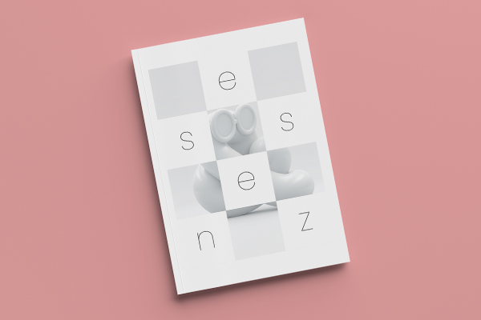

Essenz
Diseño editorial. Proyecto académico.
Essenz es el primer número de una revista de diseño creada para diseñadores y artistas.
La revista se construye sobre el concepto de menos es más, respetando siempre el vacío y los espacios en blanco, evitando cualquier exceso de información. Su nombre, Essenz, hace referencia a lo que encontrarás dentro de la misma revista, consejos y experiencias que te ayudarán en el proceso de convertirte en la mejor diseñadora, teniendo esa revista, tendrás a tu disposición la esencia del diseño.